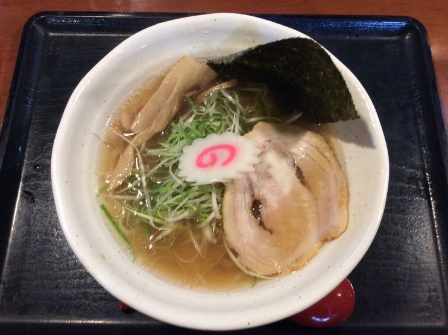
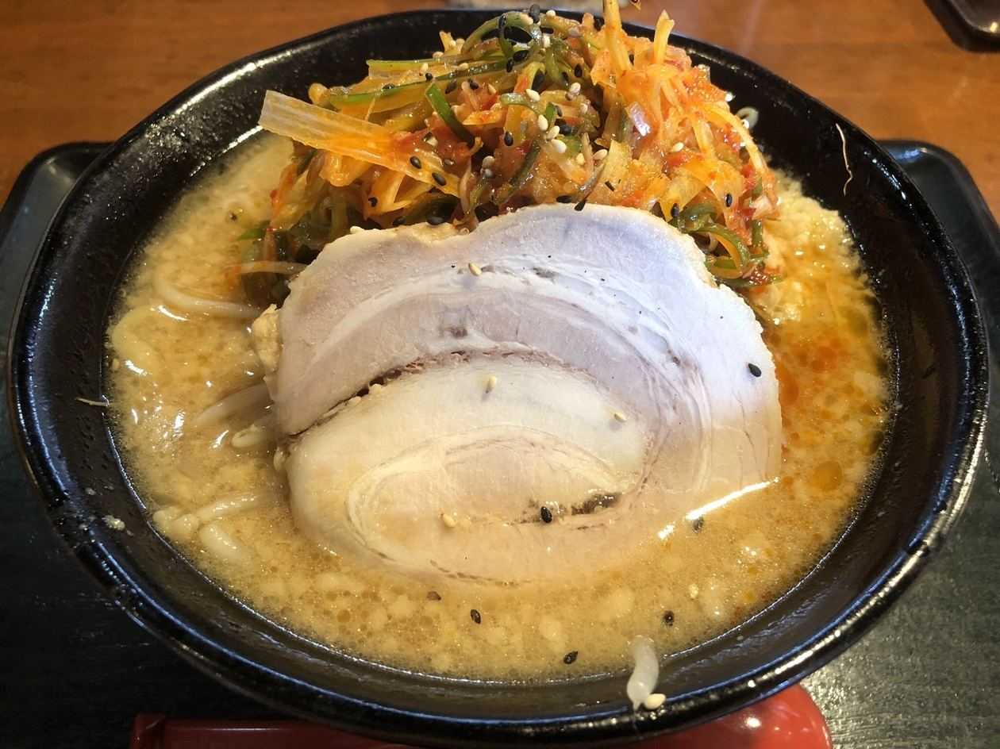
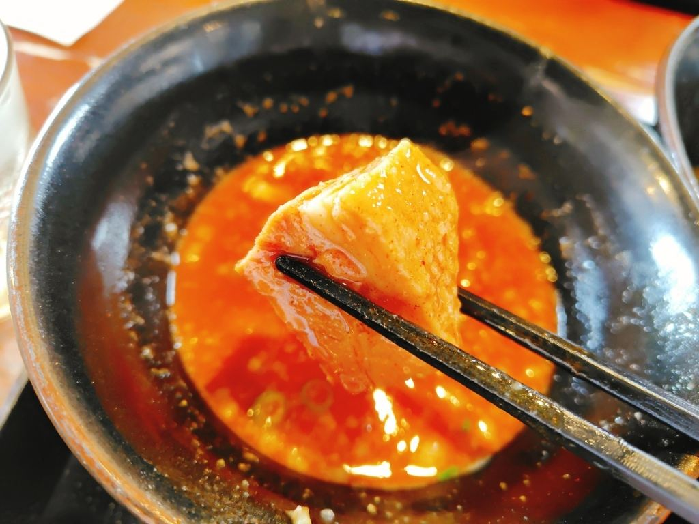
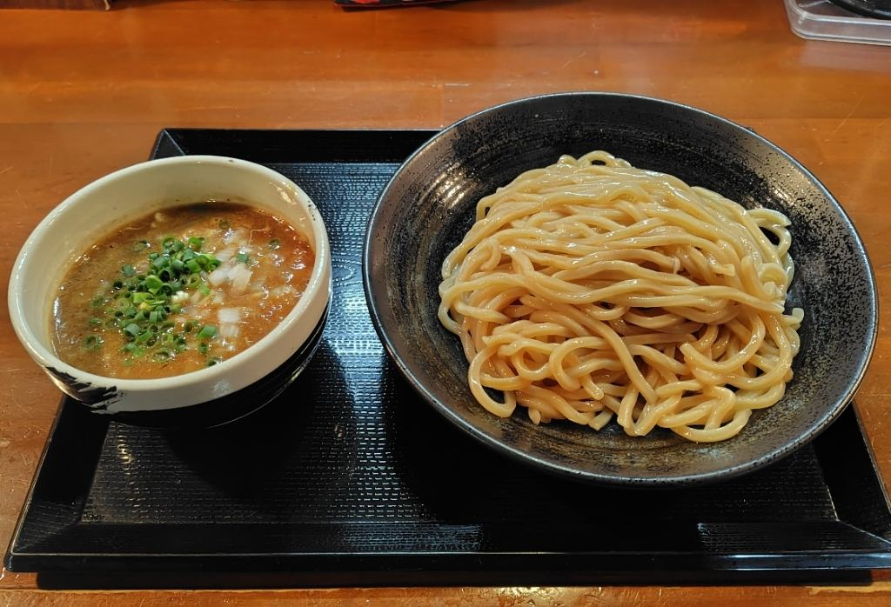
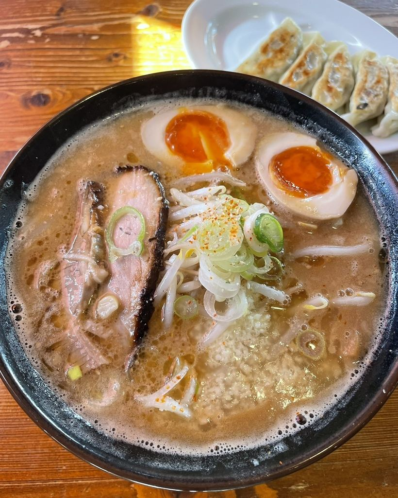
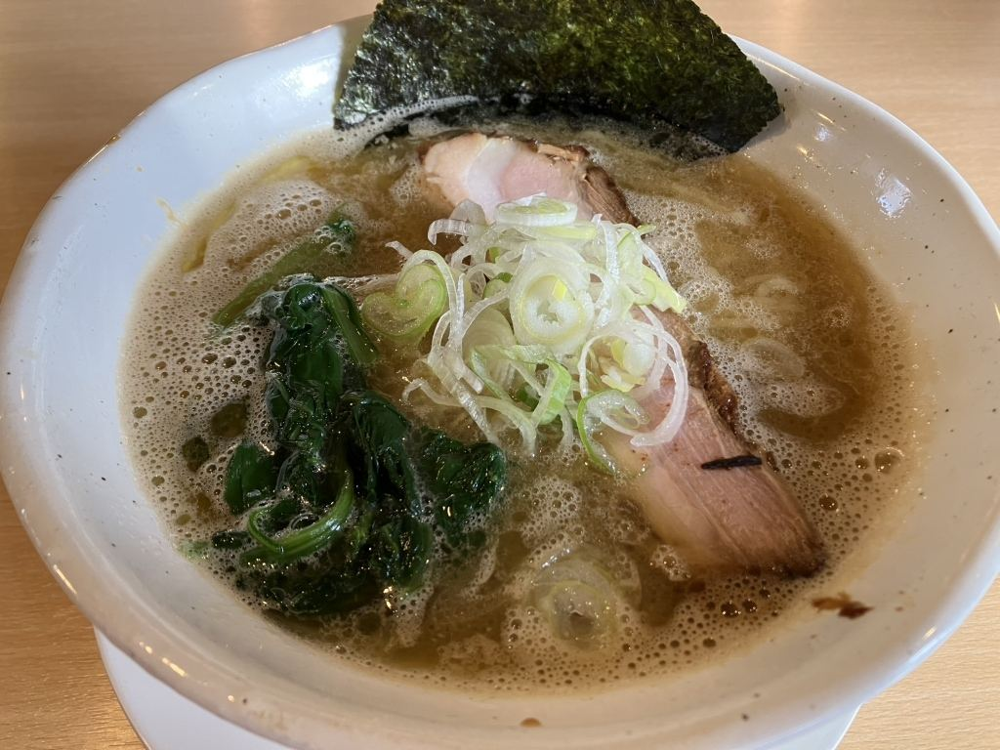
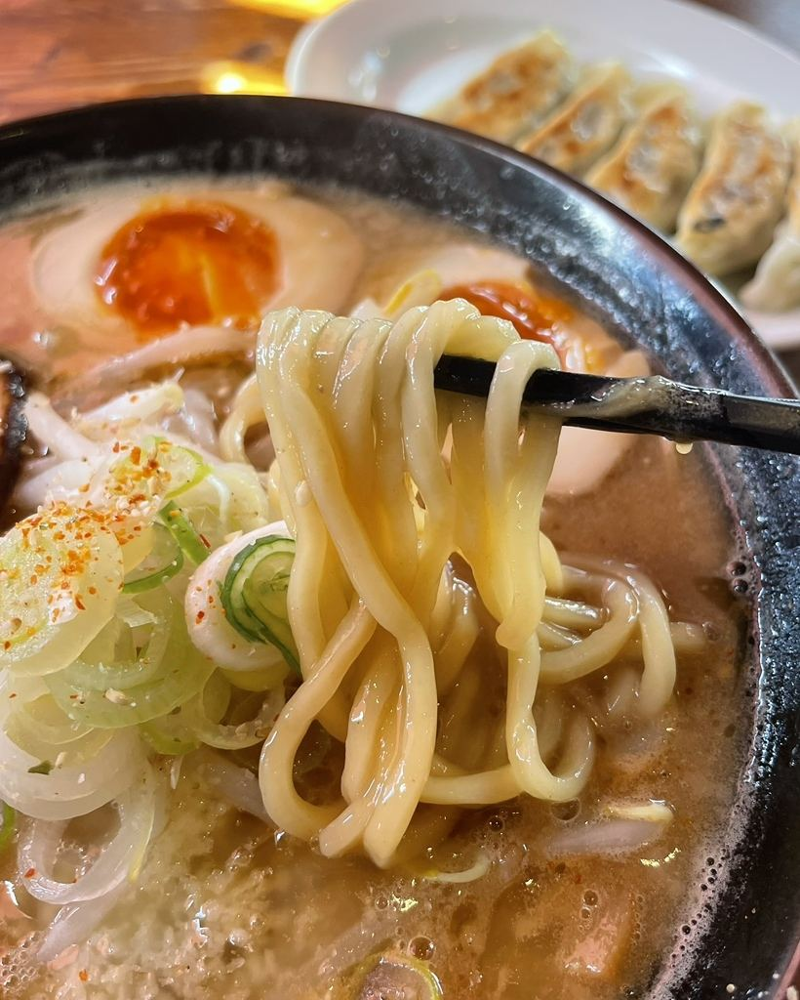
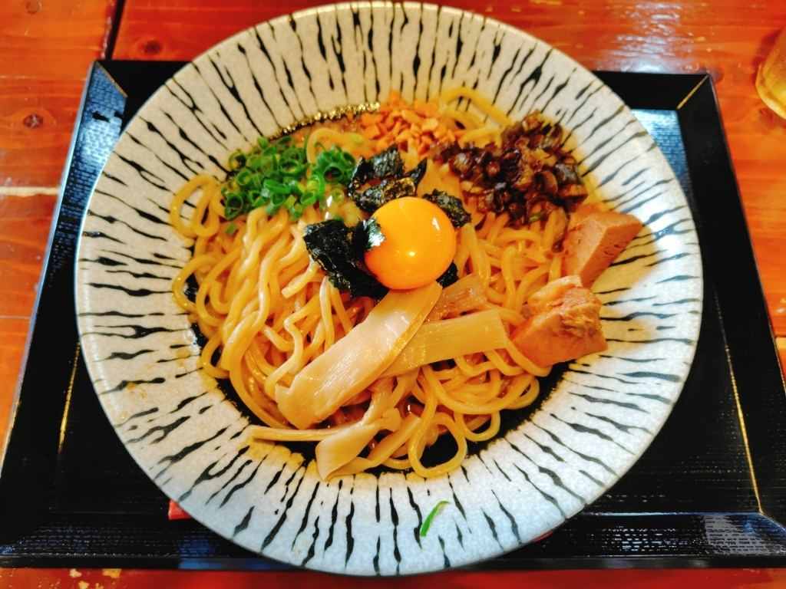

茨城県古河市大堤 ラーメン・つけ麺
あっさりも、濃厚も、つけ麺も。
その日の気分でお選びいただけます。



同じ一軒で、三つの一杯をご用意しております。

麺とつけ汁を別々にお出しするつけ麺です。魚介の香るつけ汁でお仕立てしております。

みそのコクをきかせた、濃いめの一杯でお出ししております。

鶏だしをきかせた、澄んだあっさりのスープでお出ししております。
お品によって、麺の太さを使い分けております。

つけ麺には、コシのある太麺を合わせております。

中華そばには、細麺を合わせております。
2010年10月の開店より、この場所で一杯ずつお作りしております。
カウンター6席・テーブル10席のほか、4人掛けの小上がりを3卓ご用意しております。
敷地内に30台分の駐車場がございます。
仕込みましたスープが無くなり次第、その日の営業を終了とさせていただく場合がございます。あらかじめご了承くださいませ。
「味噌つけ麺 最高！」
お客様の声より
「ラーメンは相変わらず美味しい。」
お客様の声より
仕込みましたスープが無くなり次第、その日の営業を終了とさせていただく場合がございます。遅いお時間にお越しの際は、お電話でご確認くださいませ。
| 住所 | 〒306-0236 茨城県古河市大堤617-8 |
|---|---|
| 電話 | 0280-31-2222 |
| 営業時間 | 11:30〜14:00（L.O.13:45）／17:30〜21:00（L.O.20:45） |
| 定休日 | 木曜日（祝日の場合は翌日） |
| 席数 | カウンター6席・テーブル10席・4人掛け小上がり3卓 |
| 駐車場 | 敷地内30台 |
| お支払い | クレジットカードはご利用いただけません |
小上がり席のご利用も、お電話で承っております。